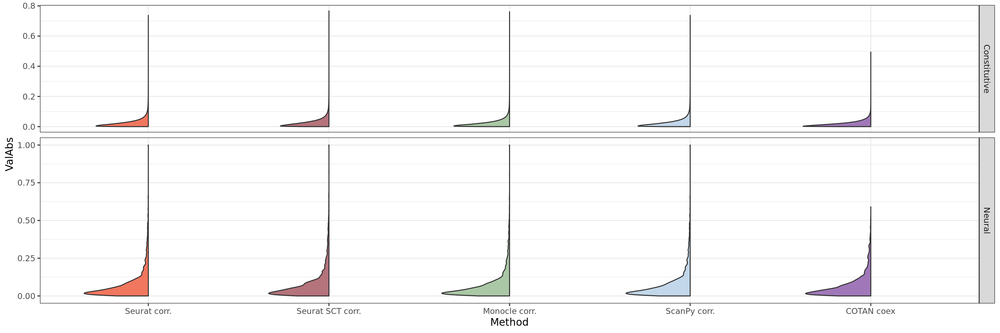
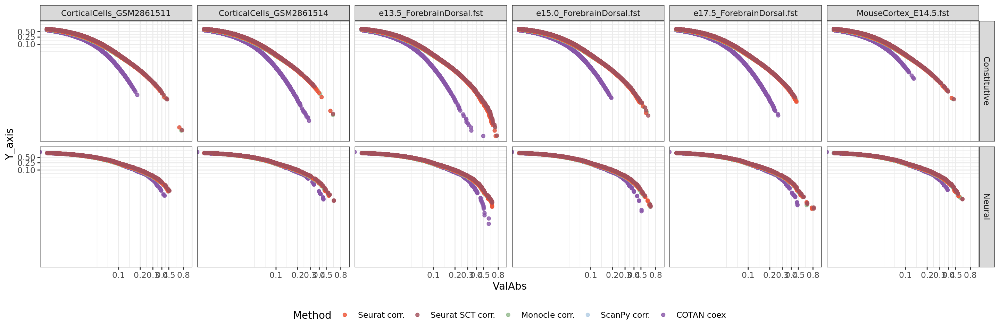
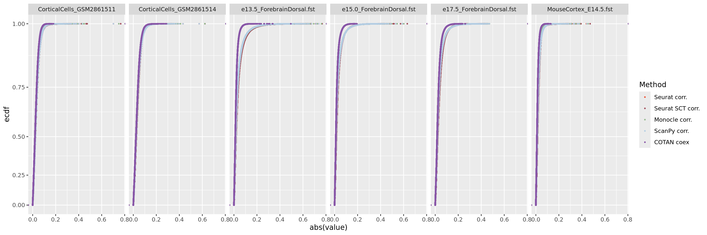
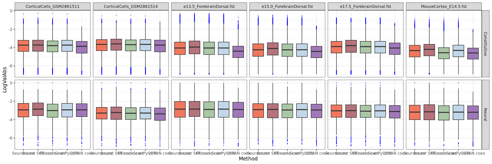
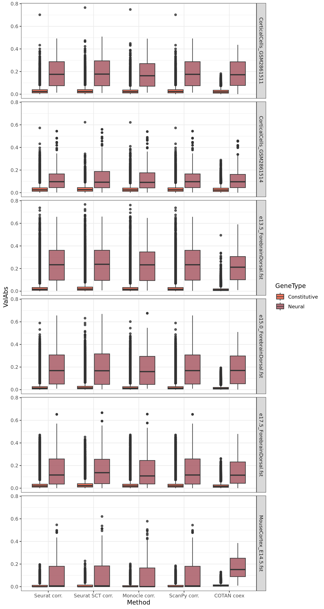
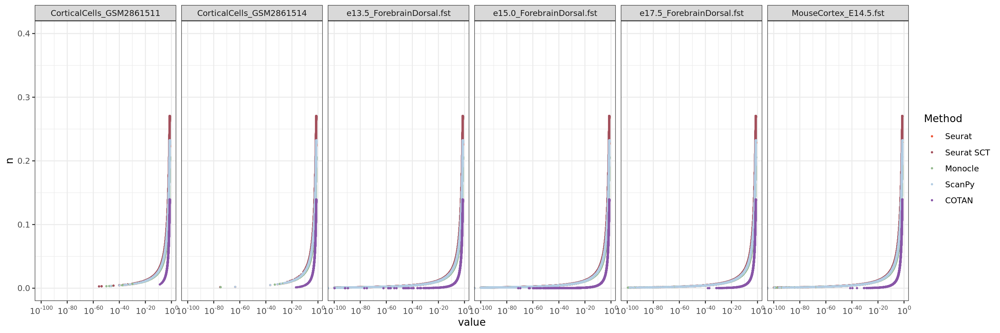
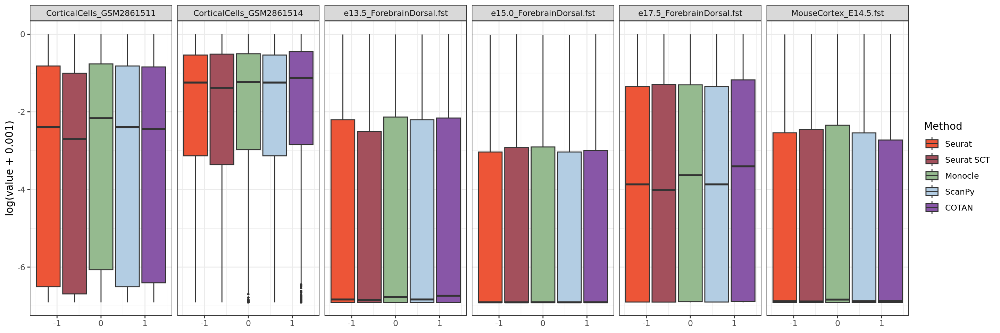
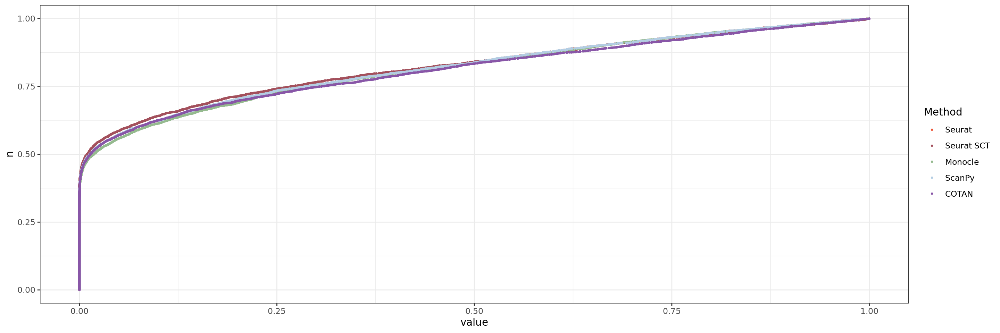
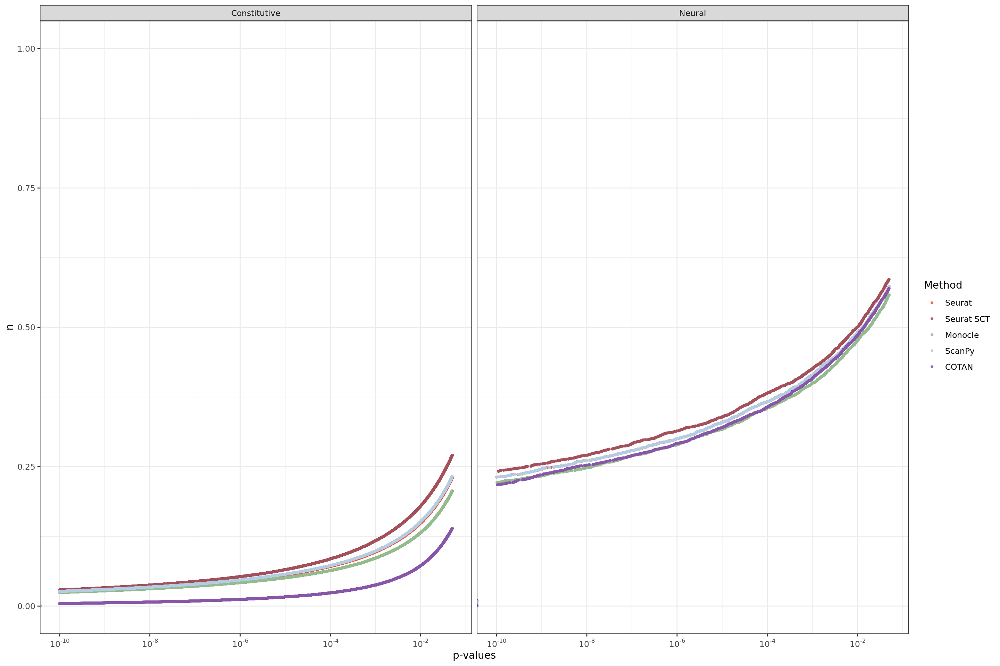

library(tidyr)
library(stringr)
library(ggplot2)
library(gghalves)
library(ggstatsplot)
library("gridExtra")
library(cowplot)
library(Matrix)
library(ggstance)
library(scales)
#library(COTAN)General Coex Evaluation
genesList <- list(
"NPGs"=
c("Nes", "Vim", "Sox2", "Sox1", "Notch1", "Hes1", "Hes5", "Pax6"),
"PNGs"=
c("Map2", "Tubb3", "Neurod1", "Nefm", "Nefl", "Dcx", "Tbr1"),
"hk"=
c("Calm1", "Cox6b1", "Ppia", "Rpl18", "Cox7c", "Erh", "H3f3a",
"Taf1", "Taf2", "Gapdh", "Actb", "Golph3", "Zfr", "Sub1",
"Tars", "Amacr"),
"layers" =
c("Reln","Lhx5","Cux1","Satb2","Tle1","Mef2c","Rorb","Sox5","Bcl11b","Fezf2","Foxp2","Ntf3","Rasgrf2","Pvrl3", "Cux2","Slc17a6", "Sema3c","Thsd7a", "Sulf2", "Kcnk2","Grik3", "Etv1", "Tle4", "Tmem200a", "Glra2", "Etv1","Htr1f", "Sulf1","Rxfp1", "Syt6")
# From https://www.science.org/doi/10.1126/science.aam8999
)COEX and Correlations
Import COTAN coex and correlations data from file
table.tot.hk <- NA
table.tot.neural <- NA
for (file in list.files("CoexData/",pattern = "Corr|Coex")) {
corr <- readRDS(paste0("CoexData/",file))
corr <- as.data.frame(as.matrix(corr))
if(str_detect(file,pattern = "CotanCoex")){
code <- "COTAN coex"
}else if(str_detect(file,pattern = "CorrSCT")){
code <- "Seurat SCT corr."
}else if(str_detect(file,pattern = "Corr")){
code <- "Seurat corr."
}
table.hk <- as.data.frame(corr[,genesList$hk])
table.hk$Gene1 <- rownames(table.hk)
table.hk <- pivot_longer(as.data.frame(table.hk),cols = c(1:(ncol(table.hk)-1)),names_to = "Gene2")
table.hk$Method <- code
table.tot.hk <- rbind(table.tot.hk,table.hk)
table.tot.hk <- table.tot.hk[! table.tot.hk$Gene1 == table.tot.hk$Gene2,]
#Not hk
table.neural <- as.data.frame(corr[rownames(corr) %in% c(genesList$NPGs,genesList$PNGs,genesList$layers),colnames(corr) %in% c(genesList$NPGs,genesList$PNGs,genesList$layers)])
table.neural$Gene1 <- rownames(table.neural)
table.neural <- pivot_longer(as.data.frame(table.neural),cols = c(1:(ncol(table.neural)-1)),names_to = "Gene2")
table.neural$Method <- code
table.tot.neural <- rbind(table.tot.neural,table.neural)
table.tot.neural <- table.tot.neural[! table.tot.neural$Gene1 == table.tot.neural$Gene2,]
}table.tot.hk <- table.tot.hk[2:nrow(table.tot.hk),]
table.tot.hk$GeneType <- "Constitutive"
table.tot.neural <- table.tot.neural[2:nrow(table.tot.neural),]
table.tot.neural$GeneType <- "Neural"
## For ECDL
tmp.tot <- NA
for (method in unique(table.tot.hk$Method)) {
tmp <- as.data.frame(table.tot.hk[table.tot.hk$Method == method,])
tmp$n <- NA
tmp[order(abs(tmp$value)),]$n <- c(1:dim(tmp)[1])/(dim(tmp)[1]+1)
tmp$Y_axis <- 1-tmp$n
tmp.tot <- rbind(tmp.tot,tmp)
}
tmp.tot <- tmp.tot[2:nrow(tmp.tot),]
table.tot.hk <- tmp.tot
tmp.tot <- NA
for (method in unique(table.tot.neural$Method)) {
tmp <- as.data.frame(table.tot.neural[table.tot.neural$Method == method,])
tmp$n <- NA
tmp[order(abs(tmp$value)),]$n <- c(1:dim(tmp)[1])/(dim(tmp)[1]+1)
tmp$Y_axis <- 1-tmp$n
tmp.tot <- rbind(tmp.tot,tmp)
}
tmp.tot <- tmp.tot[2:nrow(tmp.tot),]
table.tot.neural <- tmp.tot
############
table.tot <- rbind(table.tot.hk,table.tot.neural)
table.tot <- table.tot[!table.tot$Gene1 == table.tot$Gene2,]
identical(table.tot[table.tot$Method == "COTAN coex",]$Gene1,
table.tot[table.tot$Method == "Seurat corr.",]$Gene1 )[1] FALSEidentical(table.tot[table.tot$Method == "COTAN coex",]$Gene2,
table.tot[table.tot$Method == "Seurat corr.",]$Gene2 )[1] FALSEhead(table.tot) Gene1 Gene2 value Method GeneType n Y_axis
2 Nes Calm1 0.07759659 COTAN coex Constitutive 0.9192519 0.08074807
3 Nes Cox6b1 0.01041200 COTAN coex Constitutive 0.2809681 0.71903190
4 Nes Ppia 0.02778287 COTAN coex Constitutive 0.5916392 0.40836084
5 Nes Rpl18 0.11794907 COTAN coex Constitutive 0.9845985 0.01540154
6 Nes Cox7c 0.01694457 COTAN coex Constitutive 0.4173817 0.58261826
7 Nes Erh 0.06612110 COTAN coex Constitutive 0.8822882 0.11771177table.tot$ValAbs <- abs(table.tot$value)
table.tot$LogValAbs <- log(table.tot$ValAbs+0.001)
table.tot$SqrValAbs <- table.tot$ValAbs**2
ggplot(table.tot,aes(x=Method,y=LogValAbs, fill=Method)) +
geom_half_violin(alpha=0.8) +
#geom_point(position = "jitter", size= 0.1,alpha = 0.3)+
geom_half_boxplot(width=0.1, alpha=0.8,side = "r") +
theme_bw()+ theme(legend.position="none")+#ylim(0,1)+
facet_grid(GeneType ~ . , space = "free_y", scales = "free")+
scale_fill_manual(values = c("#8856A7","#EDF8FB","#B3CDE3" ))
ggplot(table.tot[table.tot$GeneType == "Neural",], aes(x = ValAbs, y = -0.5)) +
# horizontal box plot
geom_boxploth(aes(fill = Method)) +
# normal density plot
geom_density(aes(x = ValAbs), inherit.aes = FALSE) +
# # vertical lines at Q1 / Q2 / Q3
# stat_boxploth(geom = "vline", aes(xintercept = ..xlower..)) +
stat_boxploth(geom = "vline", aes(xintercept = ..xmiddle..)) +
# stat_boxploth(geom = "vline", aes(xintercept = ..xupper..)) +
#
facet_grid(Method ~ .) +
# reproduce original chart's color scale (o/w ordered factors will result
# in viridis scale by default, using the current version of ggplot2)
scale_fill_discrete()+scale_fill_manual(values = c("#8856A7","#EDF8FB","#B3CDE3" ))+
theme_bw()+ theme(legend.position="none")
In this case we don’t see differences between coex and correlations.
ggplot(table.tot[table.tot$GeneType == "Constitutive",], aes(x = ValAbs, y = -0.5)) +
# horizontal box plot
geom_boxploth(aes(fill = Method), outlier.size = 0.5,width=3) +
# normal density plot
geom_density(aes(x = ValAbs), inherit.aes = FALSE) +
# # vertical lines at Q1 / Q2 / Q3
# stat_boxploth(geom = "vline", aes(xintercept = ..xlower..)) +
stat_boxploth(geom = "vline", aes(xintercept = ..xmiddle..)) +
# stat_boxploth(geom = "vline", aes(xintercept = ..xupper..)) +
#
facet_grid(Method ~ .) +
# reproduce original chart's color scale (o/w ordered factors will result
# in viridis scale by default, using the current version of ggplot2)
scale_fill_discrete()+scale_fill_manual(values = c("#8856A7","#EDF8FB","#B3CDE3" ))+
theme_bw()+ theme(legend.position="none")
We can clearly observe that the coex is generally more near to zero than the correlations.
ggplot(table.tot,aes(x=ValAbs, color=Method, y = Y_axis)) +
geom_point(alpha=0.8) +
scale_color_manual(values = c("#8856A7","gray","#B3CDE3" ))+
scale_y_continuous(trans= "log",breaks = c(0,0.1,0.25,0.5)
)+
scale_x_continuous(trans= "log",
breaks = c(0.1,0.2,0.3, 0.4,0.5,0.8), limits = c(0.01,0.85))+
theme_bw()+ theme(legend.position="bottom")+
facet_grid(GeneType ~ . )
ggplot(table.tot.hk,aes(x=abs(value), color=Method))+stat_ecdf(geom = "point", size = 0.5 )+scale_color_manual(values = c("#8856A7","gray","#B3CDE3" ))+
scale_y_continuous(trans= "exp")
ggplot(table.tot,aes(x=Method,y=ValAbs, fill=Method)) +
#geom_half_boxplot(alpha=0.8) +
#geom_point(position = "jitter", size= 0.1,alpha = 0.3)+
geom_boxplot(alpha=0.8,outlier.size = 0.1,outlier.colour='blue', alpha=0.1) +
theme_bw()+ theme(legend.position="none")+ylim(0,0.2)+
facet_grid(GeneType ~ . , space = "free_y", scales = "free")+
scale_fill_manual(values = c("#8856A7","#EDF8FB","#B3CDE3" ))
ggplot(table.tot,aes(x=Method,y=ValAbs, fill=GeneType)) +
geom_boxplot(alpha=0.8) +
#geom_hline(yintercept = -3.39)+
#geom_hline(yintercept = -1.86)+
#geom_point(position = "jitter", size= 0.1,alpha = 0.3)+
#geom_half_boxplot(width=0.1, alpha=0.8,side = "r") +
theme_bw()+ #theme(legend.position="none")+
scale_fill_manual(values = c("#8856A7","#EDF8FB","#B3CDE3" ))
p-values
table.tot.hk <- NA
table.tot.neural <- NA
for (file in list.files("CoexData/",pattern = "PValue")) {
pval <- readRDS(paste0("CoexData/",file))
#pval <- as.data.frame(as.matrix(pval))
if(str_detect(file,pattern = "Cotan")){
code <- "COTAN p-values"
if(all(diag(pval)) == 1){
diag(pval) = 0
}
}else if(str_detect(file,pattern = "PValuesSCT")){
code <- "Seurat SCT p-values"
}else if(str_detect(file,pattern = "SeuratPValues")){
code <- "Seurat p-values"
}
table.hk <- as.data.frame(pval[,genesList$hk])
table.hk$Gene1 <- rownames(table.hk)
table.hk <- pivot_longer(as.data.frame(table.hk),cols = c(1:(ncol(table.hk)-1)),names_to = "Gene2")
table.hk$Method <- code
table.tot.hk <- rbind(table.tot.hk,table.hk)
table.tot.hk <- table.tot.hk[! table.tot.hk$Gene1 == table.tot.hk$Gene2,]
#Not hk
table.neural <- as.data.frame(pval[rownames(pval) %in% c(genesList$NPGs,genesList$PNGs,genesList$layers),colnames(pval) %in% c(genesList$NPGs,genesList$PNGs,genesList$layers)])
table.neural$Gene1 <- rownames(table.neural)
table.neural <- pivot_longer(as.data.frame(table.neural),cols = c(1:(ncol(table.neural)-1)),names_to = "Gene2")
table.neural$Method <- code
table.tot.neural <- rbind(table.tot.neural,table.neural)
table.tot.neural <- table.tot.neural[! table.tot.neural$Gene1 == table.tot.neural$Gene2,]
}
table.tot.hk <- table.tot.hk[2:nrow(table.tot.hk),]
table.tot.hk$GeneType <- "Constitutive"
table.tot.neural <- table.tot.neural[2:nrow(table.tot.neural),]
table.tot.neural$GeneType <- "Neural"
## For ECDL
tmp.tot <- NA
for (method in unique(table.tot.hk$Method)) {
tmp <- as.data.frame(table.tot.hk[table.tot.hk$Method == method,])
tmp$n <- NA
tmp[order(abs(tmp$value)),]$n <- c(1:dim(tmp)[1])/(dim(tmp)[1]+1)
tmp$Y_axis <- 1-tmp$n
tmp.tot <- rbind(tmp.tot,tmp)
}
tmp.tot <- tmp.tot[2:nrow(tmp.tot),]
table.tot.hk <- tmp.tot
tmp.tot <- NA
for (method in unique(table.tot.neural$Method)) {
tmp <- as.data.frame(table.tot.neural[table.tot.neural$Method == method,])
tmp$n <- NA
tmp[order(abs(tmp$value)),]$n <- c(1:dim(tmp)[1])/(dim(tmp)[1]+1)
tmp$Y_axis <- 1-tmp$n
tmp.tot <- rbind(tmp.tot,tmp)
}
tmp.tot <- tmp.tot[2:nrow(tmp.tot),]
table.tot.neural <- tmp.tot
############
table.tot <- rbind(table.tot.hk,table.tot.neural)
table.tot <- table.tot[!table.tot$Gene1 == table.tot$Gene2,]
identical(table.tot[table.tot$Method == "COTAN p-val",]$Gene1,
table.tot[table.tot$Method == "Seurat p-val.",]$Gene1 )[1] TRUEhead(table.tot) Gene1 Gene2 value Method GeneType n Y_axis
2 Actb Calm1 0.1154619 COTAN p-values Constitutive 0.3496081 0.6503919
3 Actb Cox6b1 0.3563300 COTAN p-values Constitutive 0.5415454 0.4584546
4 Actb Ppia 0.2790691 COTAN p-values Constitutive 0.4871221 0.5128779
5 Actb Rpl18 0.4733509 COTAN p-values Constitutive 0.6257559 0.3742441
6 Actb Cox7c 0.8035390 COTAN p-values Constitutive 0.8680851 0.1319149
7 Actb Erh 0.6855733 COTAN p-values Constitutive 0.7746920 0.2253080Constitutive genes
ggplot(table.tot[table.tot$GeneType == "Constitutive",], aes(y = value)) +
geom_boxplot(aes(fill = Method), outlier.size = 0.5,width=3) +
scale_fill_discrete()+scale_fill_manual(values = c("#8856A7","#EDF8FB","#B3CDE3" ))+
theme_bw()#+ theme(legend.position="none")
ggplot(table.tot.hk,aes(x=value,y=n, color=Method))+geom_point(size = 0.5 )+
scale_color_manual(values = c("#8856A7","gray","#B3CDE3" ))+
theme_bw()
ggplot(table.tot.hk,aes(x=value,y=n, color=Method))+geom_point(size = 0.5 )+ scale_x_continuous(trans = log_trans(base = 10),
breaks = trans_breaks("log10", function(x) 10^x),
labels = trans_format("log10", math_format(10^.x)),limits = c(10^(-100),0.05)) + ylim(0,0.4) +scale_color_manual(values = c("#8856A7","gray","#B3CDE3" ))+
theme_bw()
We can observe from this plot that COTAN has lower false positive error in fact the number of constitutive genes with p-values lower than 0.05 is quite smaller than from Seurat (both normalization).
ggplot(table.tot[table.tot$GeneType == "Constitutive",],aes(x=value, color=Method))+geom_density()+xlim(0,0.05)+
scale_color_manual(values = c("#8856A7","#EDF8FB","#B3CDE3" ))+
theme_bw() 
Neural genes
ggplot(table.tot[table.tot$GeneType == "Neural",], aes(y = (value))) +
geom_boxplot(aes(fill = Method), outlier.size = 0.5,width=3) +
scale_fill_discrete()+scale_fill_manual(values = c("#8856A7","#EDF8FB","#B3CDE3" ))+
theme_bw() #+ theme(legend.position="none")
ggplot(table.tot.neural,aes(x=value,y=n, color=Method))+geom_point(size = 0.5 )+scale_color_manual(values = c("#8856A7","#EDF8FB","#B3CDE3" ))+
theme_bw()
ggplot(table.tot.neural,aes(x=value,y=n, color=Method))+geom_point(size = 0.5 )+
scale_x_continuous(trans = log_trans(base = 10),
breaks = trans_breaks("log10", function(x) 10^x),
labels = trans_format("log10", math_format(10^.x)),
limits = c(0.0001,0.05)) +
scale_color_manual(values = c("#8856A7","#EDF8FB","#B3CDE3" ))+
theme_bw()
ggplot(table.tot.neural,aes(x=value,y=n, color=Method))+geom_point(size = 0.5 )+
scale_x_continuous(trans = log_trans(base = 10),
breaks = trans_breaks("log10", function(x) 10^x),
labels = trans_format("log10", math_format(10^.x)),
limits = c(10^(-300),0.05)) + ylim(0,0.5)+
scale_color_manual(values = c("#8856A7","#EDF8FB","#B3CDE3" ))+
theme_bw()
Direct comparision
ggplot(table.tot,aes(x=value, color=Method))+geom_density()+
facet_grid(GeneType ~ .,scales="free")+
scale_color_manual(values = c("#8856A7","gray","#B3CDE3" ))+
theme_bw()
ggplot(table.tot,aes(x=value,y=n, color=Method))+geom_point(size = 0.5 )+
scale_x_continuous(trans = log_trans(base = 10),
breaks = trans_breaks("log10", function(x) 10^x),
labels = trans_format("log10", math_format(10^.x)),
limits = c(0.0001,0.05)) +
facet_grid(. ~ GeneType ,scales="free") +
scale_color_manual(values = c("#8856A7","gray","#B3CDE3" ))+
theme_bw()+ theme(legend.position="bottom")
Sys.time()[1] "2023-11-17 12:57:51 CET"sessionInfo()R version 4.3.2 (2023-10-31)
Platform: x86_64-pc-linux-gnu (64-bit)
Running under: Ubuntu 20.04.6 LTS
Matrix products: default
BLAS: /usr/lib/x86_64-linux-gnu/blas/libblas.so.3.9.0
LAPACK: /usr/lib/x86_64-linux-gnu/lapack/liblapack.so.3.9.0
locale:
[1] LC_CTYPE=C.UTF-8 LC_NUMERIC=C LC_TIME=C.UTF-8
[4] LC_COLLATE=C.UTF-8 LC_MONETARY=C.UTF-8 LC_MESSAGES=C.UTF-8
[7] LC_PAPER=C.UTF-8 LC_NAME=C LC_ADDRESS=C
[10] LC_TELEPHONE=C LC_MEASUREMENT=C.UTF-8 LC_IDENTIFICATION=C
time zone: Europe/Rome
tzcode source: system (glibc)
attached base packages:
[1] stats graphics grDevices utils datasets methods base
other attached packages:
[1] scales_1.2.1 ggstance_0.3.6 Matrix_1.6-2 cowplot_1.1.1
[5] gridExtra_2.3 ggstatsplot_0.12.0 gghalves_0.1.4 ggplot2_3.4.2
[9] stringr_1.5.0 tidyr_1.3.0
loaded via a namespace (and not attached):
[1] utf8_1.2.3 generics_0.1.3 stringi_1.8.1
[4] lattice_0.22-5 digest_0.6.33 magrittr_2.0.3
[7] correlation_0.8.4 evaluate_0.21 grid_4.3.2
[10] estimability_1.4.1 mvtnorm_1.2-2 fastmap_1.1.1
[13] jsonlite_1.8.7 rematch2_2.1.2 purrr_1.0.1
[16] fansi_1.0.4 cli_3.6.1 rlang_1.1.1
[19] munsell_0.5.0 withr_2.5.0 yaml_2.3.7
[22] statsExpressions_1.5.1 tools_4.3.2 datawizard_0.9.0
[25] coda_0.19-4 dplyr_1.1.2 colorspace_2.1-0
[28] zeallot_0.1.0 bayestestR_0.13.1 paletteer_1.5.0
[31] vctrs_0.6.3 R6_2.5.1 lifecycle_1.0.3
[34] emmeans_1.8.7 htmlwidgets_1.6.2 insight_0.19.6
[37] pkgconfig_2.0.3 pillar_1.9.0 gtable_0.3.3
[40] glue_1.6.2 xfun_0.39 tibble_3.2.1
[43] tidyselect_1.2.0 rstudioapi_0.15.0 parameters_0.21.1
[46] knitr_1.43 farver_2.1.1 xtable_1.8-4
[49] patchwork_1.1.2 htmltools_0.5.5 labeling_0.4.2
[52] rmarkdown_2.24 compiler_4.3.2